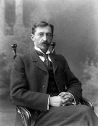

Литература серебряного века
Иван Бунин родился 22 октября 1870 года в Воронеже. Через  три с половиной года семья переехала в фамильное имение Бутырки в Орловской губернии.
В 1887 году в петербургской газете «Родина» Бунин опубликовал свои стихотворения — «Над могилой С.Я. Надсона» и «Деревенский нищий», а чуть позже — рассказы «Два странника» и «Нефедка».
В 1905 году разразилась первая русская революция, страну охватили разрушительные крестьянские бунты. Выходят повести - Деревня» и «Суходол», рассказы «Сила», «Хорошая жизнь», «Князь во князьях», «Лапти».
В 1909 году Академия наук присудила Ивану Бунину Пушкинскую премию за третий том Собрания сочинений и перевод драмы-мистерии «Каин» Джорджа Байрона.
В годы эмиграции Бунин много работал, его книги выходили почти каждый год. Он написал рассказы «Роза Иерихона», «Митина любовь», «Солнечный удар», «Божье древо».
В 1933 году Иван Бунин завершил самое значительное произведение зарубежного периода творчества — роман «Жизнь Арсеньева». Именно за него в этом же году Бунину присудили Нобелевскую премию по литературе.
В 1944 году он закончил сборник «Темные аллеи», куда вошли 38 рассказов. Среди них — «Чистый понедельник», «Баллада», «Муза», «Визитные карточки».